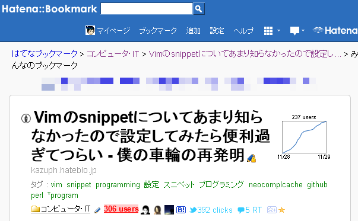
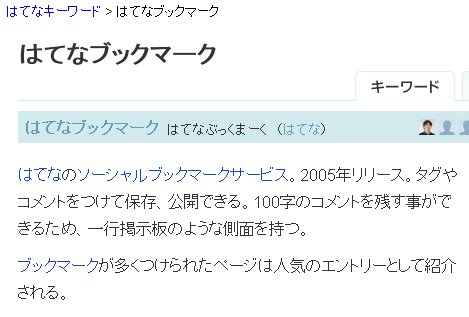
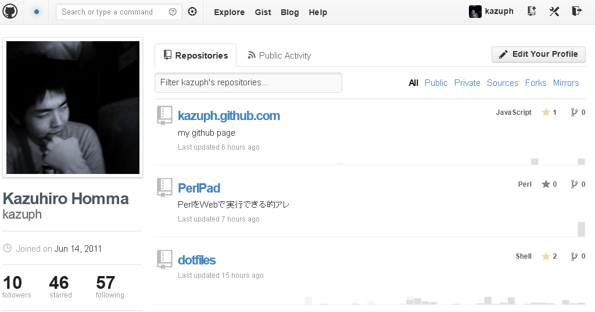

僕と僕のはてブとgithubとVimの付き合い方
@kazuph
2012/11/30
自己紹介

- ID:@kazuph
- 「かずふ」って読みます
- 2年目エンジニア
- プログラミングは大学から
- 使用言語：Perl, Objective-C, JavaScript, Java
- エディタ: Vim
- 最近はスマフォアプリつくってます。
ググればたくさん出てきます

僕の机 2

僕の机 3

直近
- Vimの記事を書いたらたくさん「はてブ」もらえました！

はてブとは？
- はてブ＝はてなブックマーク
- おそらく日本のエンジニアが最もよく使っているソーシャルブックマークサービス

自称でなく他人から後押しされた証拠があるということ
はてブ数＝戦闘力
- まわりから見た場合の分かり易い指標
- （はてブされたことがない＝戦闘力0ではないけどね）
例
- 「Vim戦闘力300！しかもまだまだ上がっている…だと！？」
晒されるデメリット
- 数値化されてしまうことで逆に低く見られてしまうかもしれない
- 炎上してしまうかも？w
晒されるメリット
- 世界中の人の目に届く
- 実力が上の人からフィードバックをもらえるかも
- そのやり取りが誰かの役に立つかも
「公開」するとすごい人達に
鍛えてもらえる可能性も！
githubとは？
- ネット上でソース管理ができるサイト
- ＋SNSが融合したサービス

僕とgithub 他にも色々
- 自分のVimとかターミナルの設定
- その他の発表資料
- 技術系の専門書を写経したコード
- etc.
vimとは
- Vimはテキストエディタ
- vimrcというvimの設定ファイル
突然の連絡！

快諾？

vimrc読書会
- vim仙人が出没して教えを請う場所
- vim界の登竜門（たぶん、かな？ちがうか
- 初級Vimmerの自分としてはかなり畏れ多い場所・・・
vimrc読書会に参加

沢山の凄腕Vimmerにdisられる
チャットルームの様子

vimrc読書会終了

githubに公開してなかったら参加できなかったイベント
まとめ
- ブログを書こう、githubにコードを上げよう
- 車輪の再発明は恐れず、今の成長途中の「自分」を公開しよう
- 結果はネットにゆだねよう
- 偶然の縁を大切にしよう
Enjoy Your
Engineering Life!
←
→
/
#